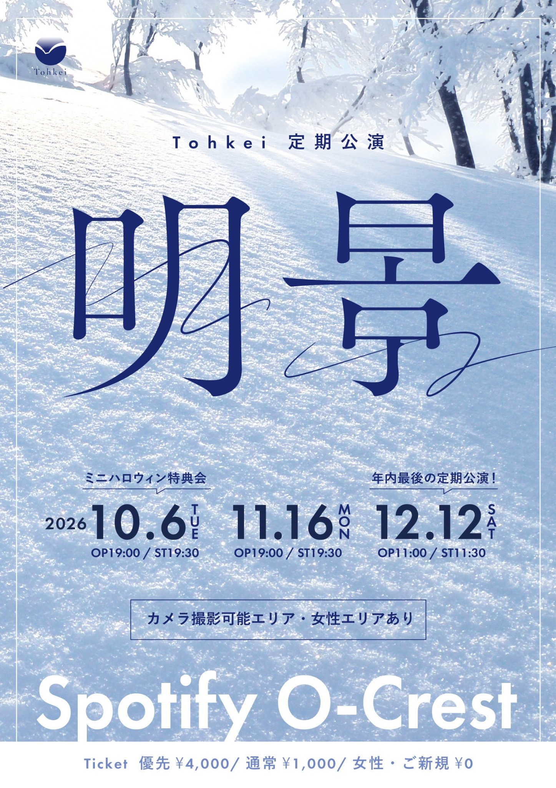
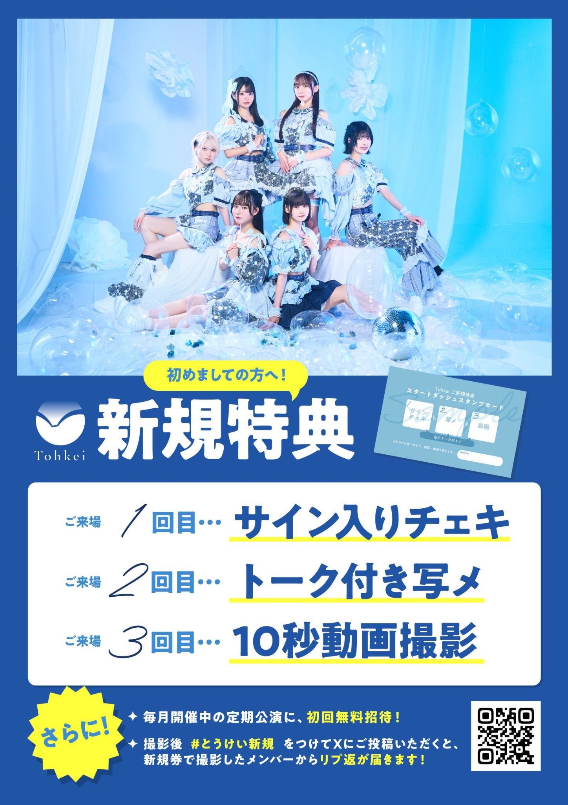

Tohkei
FIRST GUIDE
初めてのTohkei
TOP / FIRST GUIDE

NEWCOMER BENEFITS
ご新規様特典全公演共通
ご来場1〜3回目の特典
3 TIMES BENEFITS
対バン・単独公演を問わず、全公演で配布しています。
- ご来場1回目サイン入りチェキ
- ご来場2回目トーク付き写メ
- ご来場3回目10秒動画撮影
撮影後に「#とうけい新規」を付けてXにご投稿いただくと、新規券で撮影したメンバーからリプ返が届きます。

定期公演は初回の来場が無料
FIRST LIVE初めての方へ
初めての定期公演へ無料ご招待！
Tohkeiの定期公演に初めてご来場される方は、入場チケット代が無料になります。
※別途ドリンク代が必要です。無料チケットの対象・申込方法は各公演の案内をご確認ください。
ライブスケジュールを見る →初めての定期公演でのプラス特典
以下の2つは、ご新規様が初めてTohkeiの定期公演に来場する際の特典です。
FOR NEW FANS
Tohkei定期公演 ご新規様キャンペーン
はじめての定期公演の来場で写メ券をプレゼント。
WITH FRIENDS
お友達と一緒に
ご新規様と一緒にお越しいただいた方にも写メ券をプレゼント。
※特典会の物販ブースまでお越しください
BEFORE THE LIVE
ライブの前にTohkeiをここから、はじめよう
CONTACT
お気軽にお問い合わせください。
お問い合わせ